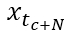
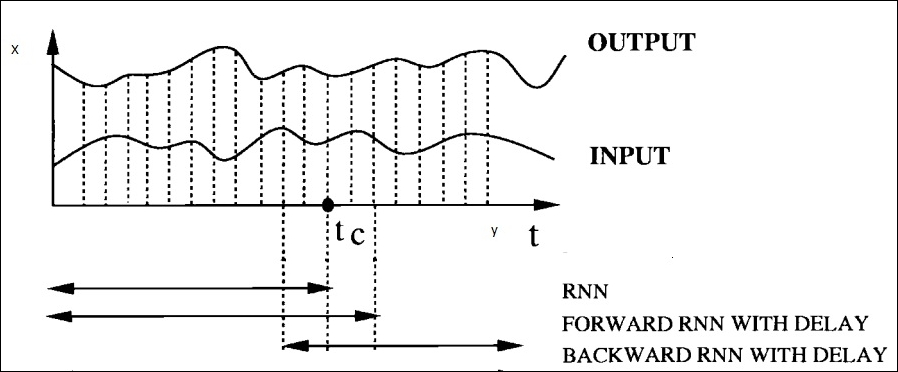
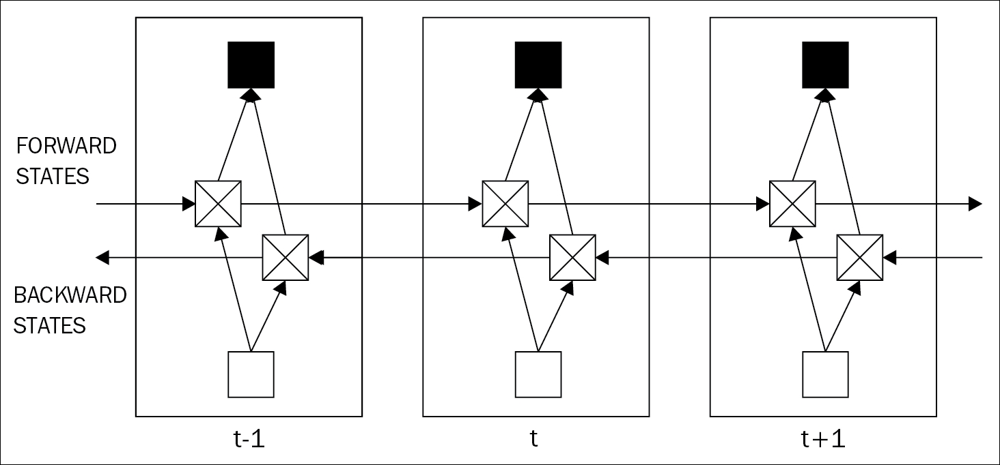

This section of the chapter will discuss the major limitations of RNNs and how bi-directional RNN, a special type of RNN helps to overcome those shortfalls. Bi-directional neural networks, apart from taking inputs from the past, takes the information from the future context for its required prediction.
The computation power of standard or unidirectional RNNs has constraints, as the current state cannot reach its future input information. In many cases, the future input information coming up later becomes extremely useful for sequence prediction. For example, in speech recognition, due to linguistic dependencies, the appropriate interpretation of the voice as a phoneme might depend on the next few spoken words. The same situation might also arise in handwriting recognition.
In some modified versions of RNN, this feature is partially attained by inserting some delay of a certain amount (N) of time steps in the output. This delay helps to capture the future information to predict the data. Although, theoretically, in order to capture most of the available future information, the value of N can be set as very large, but in a practical scenario, the prediction power of the model actually reduces with a large value of N. The paper [113] has put some logical explanation for this inference. As the value of N increases, most of the computational power of a RNN only focuses on remembering the input information for


Figure 4.8: The figure shows visualizations of input information used by different types of RNNs. [113]
To subjugate the limitations of a unidirectional RNN explained in the last section, bidirectional recurrent network (BRNN) was invented in 1997 [113].
The basic idea behind bidirectional RNN is to split the hidden state of a regular RNN into two parts. One part is responsible for the forward states (positive time direction), and the other part for the backward states (negative time direction). Outputs generated from the forward states are not connected to the inputs of the backward states, and vice versa. A simple version of a bidirectional RNN, unrolled in three time steps is shown in Figure 4.9.
With this structure, as both the time directions are taken care of, the currently evaluated time frame can easily use the input information from the past and the future. So, the objective function of the current output will eventually minimize, as we do not need to put further delays to include the future information. This was necessary for regular RNNs as stated in the last section.

Figure 4.9: The figure shows the conventional structure of a bidirectional neural network unrolled in three time steps.
So far, bidirectional RNNs have been found to be extremely useful in applications such as speech recognition [114], handwriting recognition, bioinformatics [115], and so on.